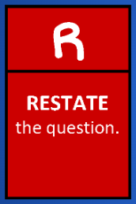
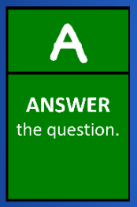
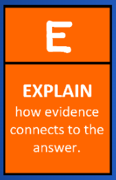

PACTS and RACES
PLOT
- The plot is the main events that make up the story.
- The plot is the overall combination of the various plot points of the story (events or scenes in the story).
- The plot points in the story are intentional, and must connect together in order to lead the story to where it is going.

|
PLOT The plot consists of 5 key parts: Exposition Rising Action Climax Falling Action Resolution |


Accordion
Exposition
- The exposition is the introduction of the story.
- This is where the characters are introduced, and where the setting is established.
- The primary conflict of the story is also introduced in the exposition.
Rising Action
- This is the part of the plot that sets the story in motion.
- These are moments of conflict that escalate further until the story reaches its peak (climax).
- Each part of the rising action is meant to promote intrigue and suspicion, while also developing the characters.
Climax
- This is where the tension reaches its highest point. It is at the peak of the plot.
- The climax is the point where the story has the biggest change, and where the protagonist (main character) is forced into a life-changing decision.
- It should be a point where the reader is unsure of what happens next in the story.
Falling Action
- This happens after the climax.
- This is where the subplots of the story begin to resolve.
- In the falling action, the story slows down.
- Any conflict that started due to the climax is resolved in the falling action.
Resolution
- The resolution is the end of the story.
- It is where the conflict of the story is resolved (usually).
- An example of an unresolved resolution, is called a cliffhanger. It is a common literary device used to end a story with suspense.
PLOT - CONFLICT
Characters in stories undergo conflicts with various “forces” such as:
- the self (Should I study for English or not?)
- another person (Should I reconcile with my friend?)
- the society (Is there something I can do against discrimination?)
- nature (How should I cope with the pandemic?)
|
ATMOSPHERE The atmosphere in a story, is the feeling, emotion, or mood that is being conveyed. Some examples include: |

Callout
CHARACTERIZATION
- This the method that authors use, so that readers can get to know a character.
- Characterization occurs any time the author uses details to teach us about a character.
- Characterization is done through:
- What the characters say (and how they say it)
- What their actions are
- What other characters say about them - There are two ways the author can do this: through direct or indirect characterization.
Direct characterizations are explicit descriptions about a character, while indirect characterizations are descriptions about a character that aren’t outwardly stated.
|
Direct Characterization |
Indirect Characterization |
|
John is a very nice person |
John used his free time to help the needy at the shelter. He also donates food and clothes every month. |
|
The black cat was fat and lazy. |
The black cat meowed incessantly for more food, as it lay on its back with paws in the air. It hadn’t moved in over an hour. |
CHARACTERS
- Characters perform actions and speak dialogue throughout the story. These can be people, animals, things, or beings who think, feel, and act.
- Characters can also be:
-A protagonist or an antagonist
-Flat or round
-Static or dynamic

CHARACTER TYPES
Tabs
The main character or the HERO of the story

The VILLAIN or the one causing conflicts for the main character

Accordion
Flat
relatively uncomplicated; does not change throughout the story.
Round
complex and detailed; undergoes development.
Static
stays the same throughout the story.
Dynamic
undergoes significant internal change as the story progresses.
CHARACTERIZATION
- Characterization is how an author helps us "know the character," just like how we get to know a person in real life.
- As we read through the story, more details about the characters are exposed through their actions and dialogues.
- Details such as the characters’ background, inspirations, motivations, and other information are revealed as we progress through the story.
THEME
The theme is the underlying message of the story. It is also considered as the main idea that the author is trying to relay.
Examples:
- Edgar Allan Poe’s “The Cask of Amontillado” has the revenge of Montresor as its theme, as it revolves upon Montresor’s strong desire to have his revenge against Fortunato.
- “The Necklace,” one of Guy de Maupassant’s short stories has a theme about contentment (ie. that people should be happy with what they have).
|
Topic, Theme, or Moral? Accordion Select each item to learn more.
TOPICThe topic tells us what a story is about. An example of a topic is LOVE. THEMEThe theme reveals something about the topic. If the topic is LOVE, the theme could be “Love is Generous.” MORALThe moral is what you learn from the story. One example is that “to show love, you do things for the person without asking for something in return.”
|
|
The RACE Strategy The RACE strategy is useful when you are given constructed response questions. This does not, however, mean that you should rush in answering!
Accordion Select each item to learn more.
RESTATE the question. Restating a questions is simply rewording that question to turn it into a statement. Question: What is ice and how is it formed? Restate: Ice is simply water that has solidified at 0°C. ANSWER the question. Answer all parts of the question completely. Question: What is ice and how is it formed? Answer: It is formed because the water molecules almost stops moving when the temperature is at its freezing point. CITE evidence from the text.Use examples and evidence from the text. Question: What is ice and how is it formed? Citing evidence: According to the text, heat energy causes molecules to move. As the temperature decreases, heat energy goes out of the molecules thus slowing its movement, thus holding each molecule in place. EXPLAIN how evidence connects to the answer. Explain your thinking. Question: What is ice and how is it formed? Explanation: Since 0°C is a very low temperature, this means that there is an extremely low amount of heat energy in each water molecule. This causes the movement of water molecules to almost completely stop, ultimately losing its ability to flow as it forms into solid ice. |

The RACE Strategy
Ice is simply water that has solidified at 0°C. It is formed because the water molecules almost stops moving when the temperature is at its freezing point. According to the text, heat energy causes molecules to move. As the temperature decreases, heat energy goes out of the molecules thus slowing its movement, thus holding each molecule in place. Since 0°C is a very low temperature, this means that there is an extremely low amount of heat energy in each water molecule. This causes the movement of water molecules to almost completely stop, ultimately losing its ability to flow as it forms into solid ice.